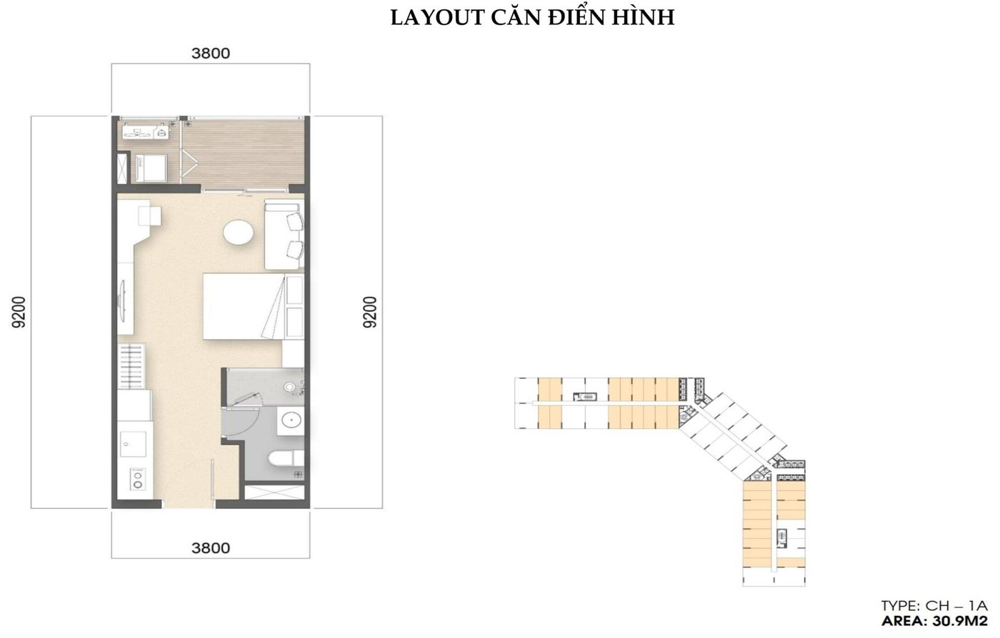
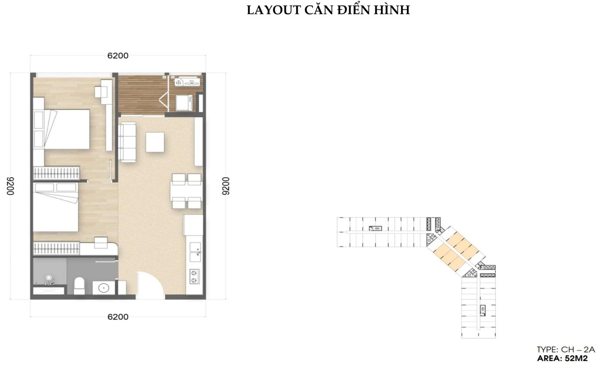
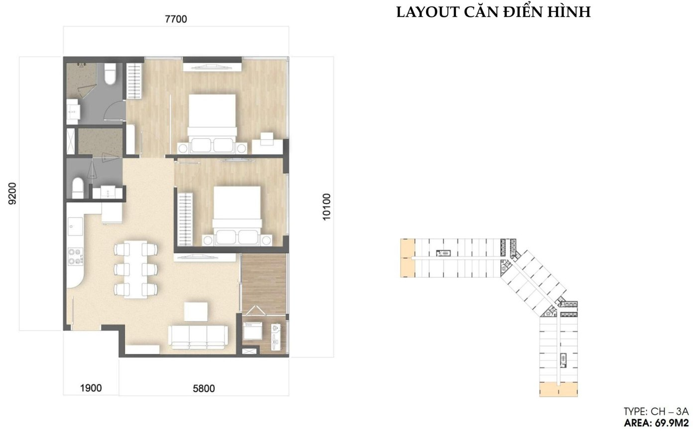

Sun Symphony Residence (Sơn Trà, Đà Nẵng): thông tin dự án và mặt bằng căn hộ
1. Tóm tắt nhanh
Sơn Trà
đã thu thập
khác nhau rõ rệt
Sun Symphony Residence là dự án căn hộ của Sun Property bên sông Hàn ở Sơn Trà, Đà Nẵng, với căn 2PN từ khoảng 68,8 m², 2PN+1 từ 79,2 m² và 3PN từ 93,1 m². Bài tổng hợp ba mặt bằng đã thu thập (chưa có diện tích in trên bản vẽ).
| Hạng mục | Thông tin |
|---|---|
| Tên dự án | Sun Symphony Residence |
| Chủ đầu tư | Sun Property |
| Diện tích | Studio/1PN nhỏ khoảng 30–46 m²; 2PN từ 68,8 m²; 3PN từ 93,1 m² |
| Giá tham khảo | 65–103 triệu/m² theo ước tính 6/2025 |
| Giá bán chính thức | Chưa có bảng giá chính thức trong bài; xem mục 5 |
2. Vị trí
Dự án nằm tại Sơn Trà, Đà Nẵng. Bài chỉ nêu thông tin công bố, không đánh giá vị trí.
3. Sản phẩm
Bảng dưới đây liệt kê toàn bộ mặt bằng đã thu thập; những mẫu có diện tích gần như trùng nhau được ghi chú “cùng mặt bằng”, và phần hình chỉ đặt các mặt bằng khác nhau. Diện tích có thể khác nhau tùy nguồn (tim tường hay thông thủy); cột trống nghĩa là tài liệu không công bố.
| Loại / mã | Số PN | Tim tường (m²) | Thông thủy (m²) | Ghi chú |
|---|---|---|---|---|
| CH-1A | 0 | – | 32,0 | |
| CH-2A | 1 | – | 46,0 | |
| CH-3A | 2 | – | 68,8 |
Studio

Căn hộ 1 phòng ngủ

Căn hộ 2 phòng ngủ

4. Tiện ích và thiết kế
Thông tin tiện ích chi tiết xem trang chính thức của dự án; bài này tập trung vào mặt bằng căn hộ.
5. Giá tham khảo (gần đúng)
| Nguồn / loại căn | Mức giá | Ghi chú |
|---|---|---|
| Ước tính 6/2025 | 65–103 triệu/m² | Thấp là căn cao tầng, cao là nhà thấp tầng |
| Giá rao | 69–124,6 triệu/m² | Căn Symphony 5 studio 66 triệu/m² |
Quanh 65–100 triệu/m² theo giá rao.
6. Tiến độ và nguồn cung
- Chưa có thông tin chính thức trong bài: số căn từng mẫu, bảng giá hiện hành và tiến độ chi tiết; hãy hỏi chủ đầu tư.
7. Kết luận
Bài tổng hợp các mặt bằng đã công bố của Sun Symphony Residence để dễ đối chiếu. Khi cân nhắc một căn cụ thể, hãy xác nhận mã căn, diện tích tim tường và thông thủy và giá hiện hành với chủ đầu tư.